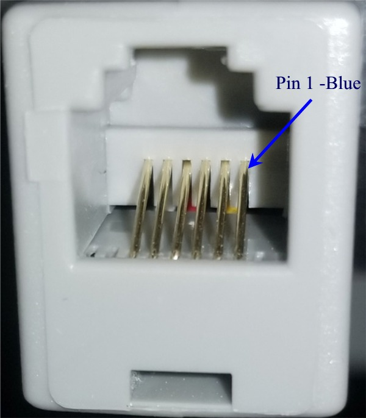

- The transmitter unit has the internal +5V voltage regulator removed. This is because the Gemini-2 will be providing power for it.
| Hand Controller Extender |
| This design is based on the MonoPrice RS-232 Extender
over Cat5e cable.
https://www.monoprice.com/product?p_id=3598
It also uses two each RJ12 (6pin) to DB9 Male adapters. Some of
these adapters come with the RJ12 side wiring reversed, so please make
sure that you check for this, and if yours is reversed, then reverse the wiring in the adapter. |
| The schematic for these adapter wiring is provided in
both a
JPG format and
PDF format. We will divide the instructions into two sections: Receiver and Transmitter. |
| Transmitter Instructions |
|
|
|
|
this brings the +5V from the Gemini-2 to this adapter. |
|
Receiver Section
|
|

|
 |
| No other modifications are required for the Receiver
or Transmitter units. |
| Here are larger pictures of the RJ12 to RS-232M
adapters. |
 Receiver adapter |
Transmitter adapter |
|
 Make sure your adapter is like this to follow the provided schematics. Otherwise you will have to reverse the wires coming from the RJ12 side of the adapter. |
Here is a picture of it in use: |
| I have tested this adapter with 600 ft of cat6
shielded cable and it worked perfectly. |
| Of course you make and use these plans at your own
risk. |
| Word of caution: Although
G2 and the HC have very good RS232C booster chips, please unplug this
adapter in case of possible lightning - it's a huge antenna. This
suggestion was provided by René, the Gemini-1 and Gemini-2 programmer. |